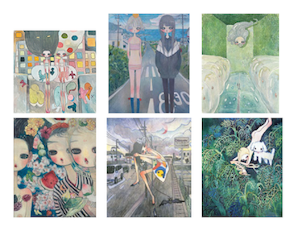
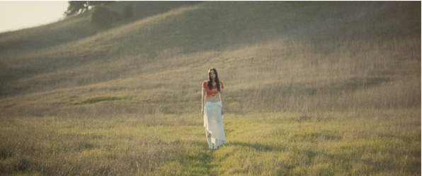

my name is alaina mendoza
these are a few artists who inspire me
luna li

i enjoy not only her music but also her work on her posters and casettes. her designs inspire me to play around with fonts and hierarchy in design.
aya takano

her paintings are delicate, dreamy, and yet chaotic. i love her colorwork and the concepts behind her pieces of art.
gus black

i specifically enjoy his work for the singer, lizzy mcalpine. i love the simplicity in his shots and the colorgrading he uses depending on the mood of the song. i like that his work gives me a sense of peace and calm.